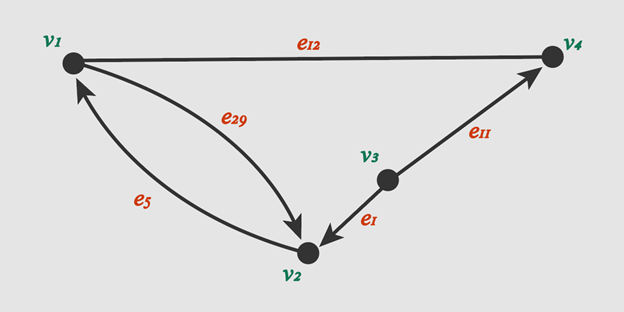

Network Visualization
(a gentle introduction with Kumu)
Meg Miller - GIS & Data Visualization Librarian
workshop: bit.ly/uml_net
Outline
- Define key terms;
- Discuss visualization types and their uses;
- Explore data structures and considerations;
- Kumu Exercise:
- Explore tool interface
- Load and symbolize network data
Key Terms (1):
Data Visualization - Display complex information in a way that makes it easier for your end user to explore or understand what you have done.
Key Terms (2.1):
Network map - Displays complex relationships through an arrangement nodes and edges.
Key Terms (2.2):
A network can also be represented by a mathematical notation with roots in graph theory.
Types of Network Visualizations:
System / Information (between objects/ entities)
Social networks (between humans)
Geographic networks (grounded in geography)
Data Structures:
Elements include: nodes, edges, directionality, weights and more.

Data Structures:
Elements include: nodes, edges, directionality, weights and more.

Data Structures:
Elements include: nodes, edges, directionality, weights and more.

Data Structures:
Elements include: nodes, edges, directionality, weights(w) and more.

Data Considerations:
Requirements (size + location)
Be kind to your audience (best practices)
Be kind to yourself (read the readme before you begin)
Getting Started:
Data Visualization LibGuide
Don't forget about training resources!
Kumu – Building a simple network

Questions
meg.miller@umanitoba.ca
workshop: bit.ly/uml_net